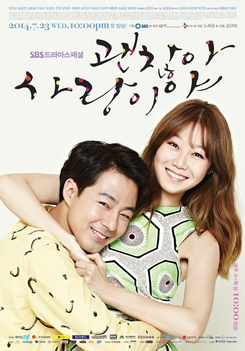

It’s Okay, It’s Love
Genre: Comedy Medical Romance
Rating : 8,5 IMDB
Stars: Hyo-jin Kong, In-seong Jo
Drama Korea It's Okay, It's Love menceritakan Jang Jae-yeol adalah seorang penulis yang sangat terkenal karena novel misterinya yang laris di pasaran. Selain berprofesi sebagai penulis, Jang Jae-yeol juga seorang DJ radio. Namun dibalik nama yang besar itu, ternyata Jang Jae-yeol adalah seorang yang sedikit sombong, dia juga menderita gangguan obsesif-kompulsif.